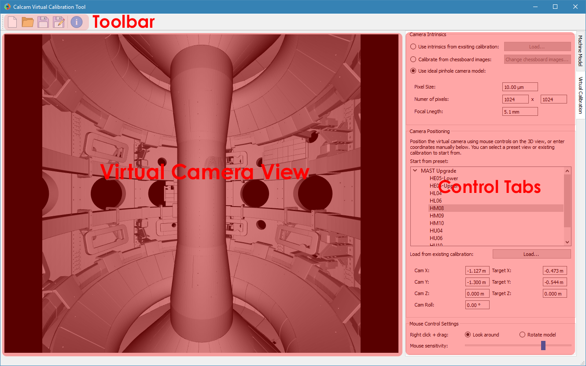

“Virtual” Calibrations¶
For design and development of new camera-based diagnostics, it can be desirable to have a calibration for a camera which does not yet exist in reality. These calibrations can be used exactly as any other calibration, so can be used, for example, to forward model images from new diagnostic, visualise the expected field of view, or find the optimal positioning and pointing for a new camera system.
The virtual calibration tool in Calcam can be used for creating such “virtual” camera calibrations. It works very similarly to the manual calibration tool, except that there is no real camera image against which to calibrate. Currently virtual calibrations are limited to a single sub-view. The virtual calibration tool window is shown below:
Loading a CAD model¶
At the top the Machine Model control tab are controls for loading a CAD model to calibrate against. Two dropdown boxes are provided to select the CAD model to load and the model variant. The Load button to the right of the model variant then loads the model. Underneath the model variant dropdown box is a checkbox labeled Enable default model features on load: if checked, the default parts of the CAD model are all loaded as soon as the model itself is loaded. If not checked, the model definition will be loaded but none of the 3D mesh data will be loaded, and instead you can turn on features individually. This is useful if working with a large model on a slow computer where you don’t want to wait for the whole model to load if not needed. You can change to a different CAD model or variant at any time by selecting a different item from the dropdown boxes and clicking Load again.
Turning CAD model features On/Off¶
For CAD models composed of multiple parts in separate mesh files, individual mesh files can be turned on or off by ticking/unticking them in the Enable / Disable Features panel. This can be done for individual parts, groups of parts (if defined in the CAD model) or the entire model. This can be helpful to improve performance when working with large models if not all parts are necessary for a particular calibration, or for removing parts which are in the way and make the calibration more difficult.
Creating the Virtual Calibration¶
Creating a virtual calibration consists of definining both the camera intrinsic and extrinsic parameters, both of which are set using the Virtual Calibration control tab. The sections below detail how to set each.
Camera Intrinsics¶
The camera intrinsics are set using the top part of the Virtual Calibration control tab. Camera intrinsics can be set 3 different ways: using intrinsics from an existing calibration (e.g. to represent an existing camera & lens setup moved to a new view), using chessboard calibration pattern images from lab measurements, or using an idealised pinhole camera model.
Existing Calibration Intrinsics¶
To use intrinsics from an existing Calcam calibration, select Use intrinsics from existing calibration and browse for the calibration you want to use. The loaded calibration can be changed using the Load... button.
Chessboard Calibration Intrinsics¶
To prepare chessboard images: make a flat chessboard target with known square size (there are various printable PDFs available by searching online). Then take a number of images with this chessboard target in front of the camera at a variety of positions, orientations and distances to the camera. The example below shows thumbnails of a set of chessboard calibration images:

To use the chessboard images to define the camera intrinsics, select Calibrate from chessboard images. The first time this option is selected it will open the following window:

Chessboard loading consists of 4 steps, done in order by working down the right hand side of this window. First, browse for and select all of the chessboard images to use. Then, enter the details of the chessboard pattern: number of squares and square size. Next, select the Detect Chessboard Corners button to run an automatic detection of the boundaries between the chessboard squares. If the automatic detection fails on some images, a dialog box will open telling you which images the detection failed for, and that those cannot be used. If all images fail, check that the number of squares input is correct. Once the corner detection has been completed, cursors will be added to the image displayed on the left hand side of the window. You can pan and zoom to inspect the cursor positions using the usual image mouse controls, and look at different images using the << and >> buttons above the image. Finally, select whether to use the perspective distortion model or fisheye distortion model. To complete loading of the images and use these to define the camera intrinsics constraints, click Apply.
Pinhole Intrinsics¶
If not using intrinsics from an existing camera system, an idealised pinhole camera model can be used. In this case, the detector size and focal length are user-specified, and the model assumes no distortion and that the centre of perspective is at the detector centre. To use this model, select Use ideal pinhole camera model in the Camera Intrinsics box. There are then boxes to enter the physical pixel size, number of detector pixels and focal length of the virtual camera.
Camera Extrinsics¶
The camera extrinsics are set by the current CAD model view shown in the window, and can be set by manually adjusting the CAD view with the mouse, and / or manually entering numerical values.
Starting from an existing view¶
It can be convenient to start from a view either defined in the CAD model definition or from another Calcam calibration. In the Camera Positioning box, the list of views defined in the CAD model are displayed, and clicking on one of these will immediately set the camera position and orientation to match that view. The field of view from the preset view will not be set, since this is determined by the camera intrinsics which are set separately. To use the extrinsics from an existing Calcam calibration, click the Load... button underneath the view list to choose a calibration file to load. This will set the camera extrinsics to match the loaded calibration, and add that calibration to the list view box so it can be returned to easily.
Mouse Controls¶
Right Click + Drag- Look around (first-person shooter style control; default) or rotate CAD model depending on settingsMiddle Click + Drag- Pan (translate) sideways i.e. in the plane of the monitor.Scroll Wheel- Move forwards or backwards.Ctrl + Right Click + Drag- Roll the camera (rotate about the direction of view)
For finer control, the mouse movement sensitivity can be adjusted using the slider in the Mouse Control Settings box at the bottom of the control tab.
Manual Entry¶
If the desired virtual camera position and view direction are already known, these can be entered in the boxes at the bottom of the Camera Positioning box.
Saving / Loading and viewing calibration information¶
When done setting up the camera intrinsics and extrinsics, the calibration can be saved to a Calcam calibration (.ccc) file using the Save / Save As buttons on the toolbar at the top of the window. The resulting file can then be loaded using the Calcam Python API to make use of the calibration. As with any computer application, it is advised to save your work regularly in case of computer crash or user error. Note: whenever the save button is clicked, the camera extrinsics in the saved calibration will be whatever the current CAD view alignment show.
Existing virtual calibrations can be loaded using the Open button in the toolbar at the top of the window. This will load the extrinsics and intrinsics from the saved calibration. If the CAD model which was last used for thet calibration is available, it will also load and set up the CAD model as it was the last time that file was edited.
Information about the current calibration can be viewed using the Calibration Information button on the toolbar.